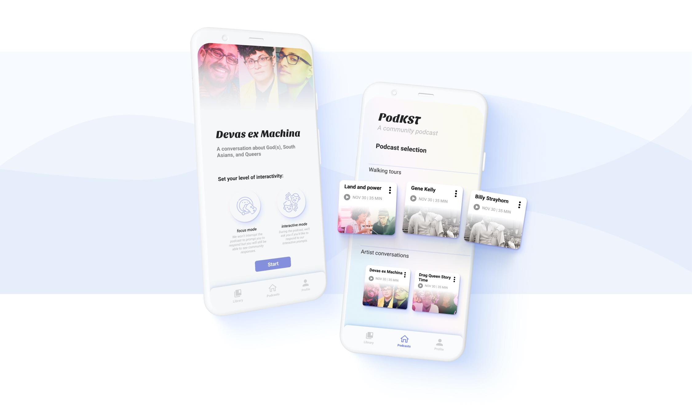
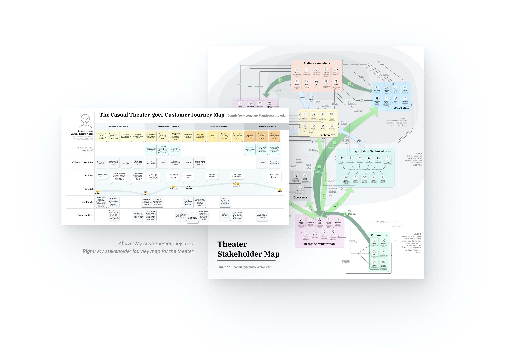
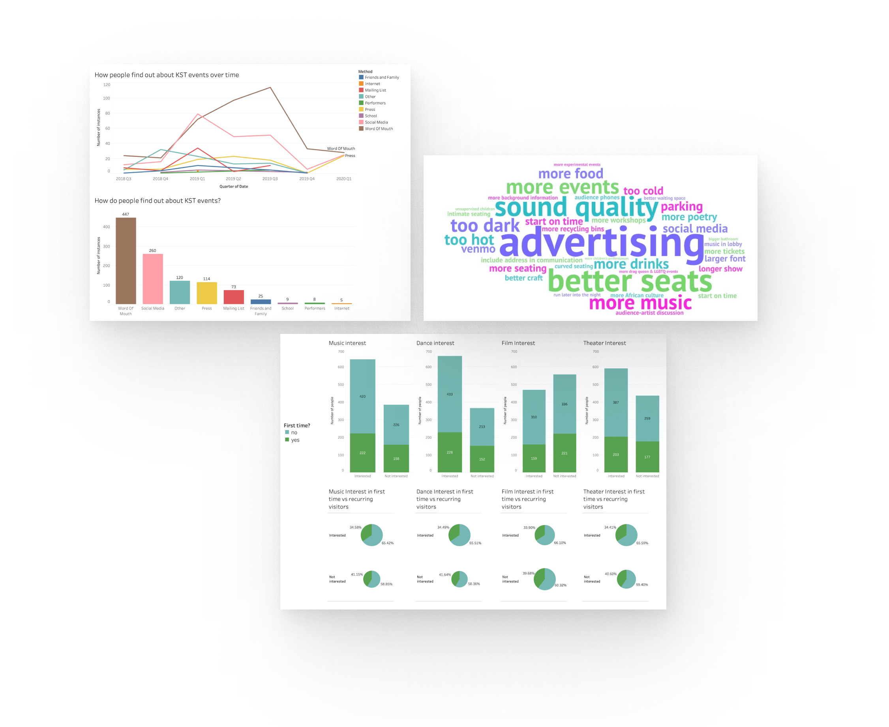
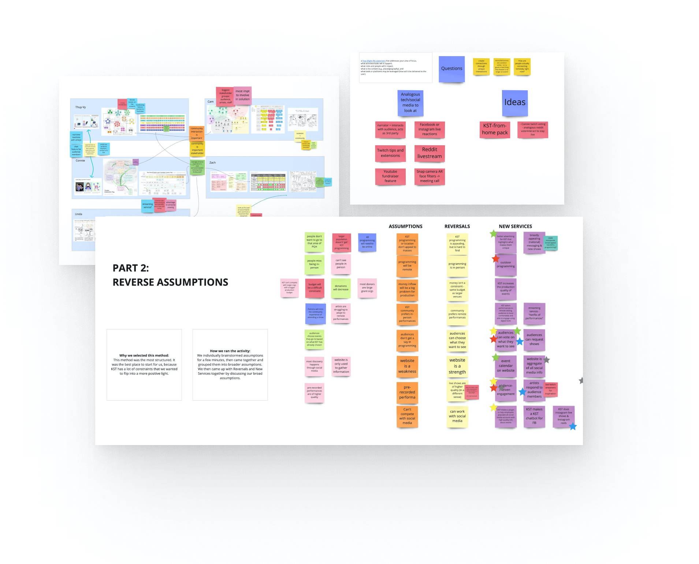
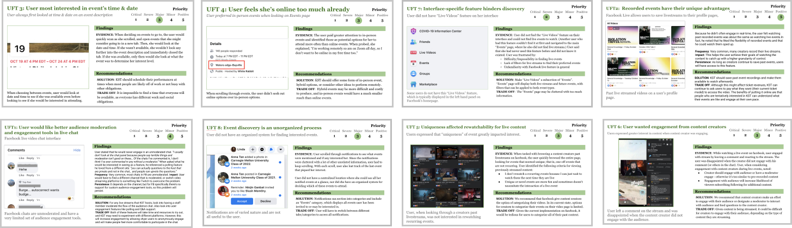
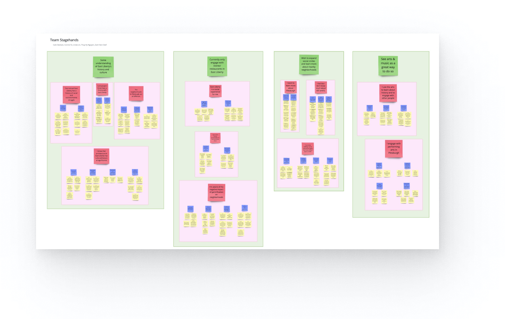
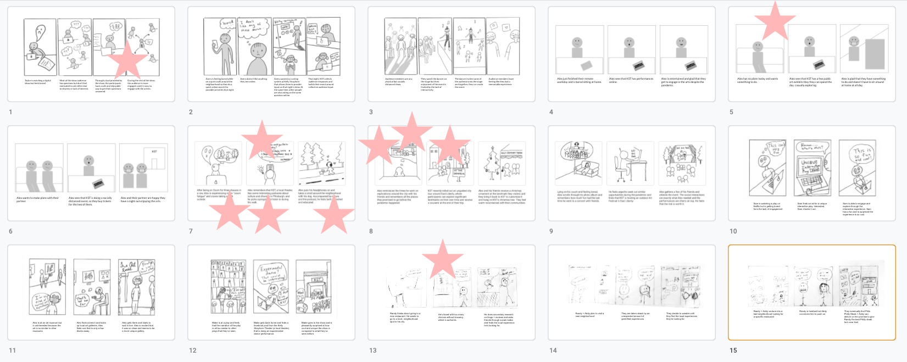
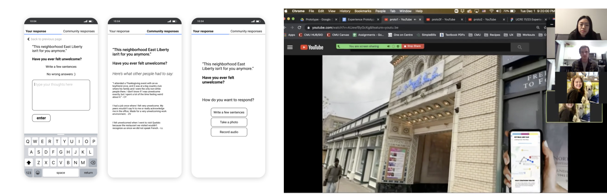
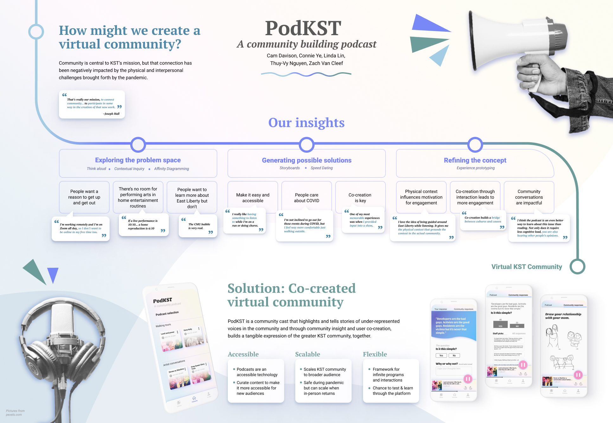

In collaboration with Thuy-Vy Nguyen, Linda Lin, Cam Davison, and Zach Van Cleef, we conducted research on behalf of Pittsburgh’s historic Kelly Strayhorn Theater over the course of two months for a user-centered research and evaluation course.
Although my team and I worked together on all aspects of the project, my primary responsibilities in the project were:
- Lead the final visual design of our app screens and pitch poster
- Lead the creation of experience prototypes for studies
- Conduct many user interviews with different methods and participate in the evaluation and documentation of the results.
Kelly Strayhorn Theater was hoping to find an innovative new way of connecting their community during the COVID pandemic. Our solution was an interactive podcast that gives people an opportunity to listen to discussions on relevant topics to KST and their community, and provide their own opinions if they wanted to, with the intent that their contributions would be incorporated into future podcasts and serve as a foundation for future KST programming and art.
Mapping "where we are"

I first began by making a journey map of the casual theater-goer’s full path through the in-person theater experience, from planning the event with friends to the moments after the performance. I also created a comprehensive stakeholder map of the different parties closely involved or indirectly affected by the theater lifecycle. Through these maps, I was able to better understand the research space and identify opportunities for innovation, underserved stakeholders to interview, and important moments in the user’s journey to consider during design.
After the mapping process, we were placed in teams that were balanced based on the team member’s individual skills. Having prior experience in UX, I took the lead on the technical aspects like prototyping and data analysis and co-led visual design for the rest of the project.
Starting our research
As a team, we have identified three territories to explore to gain a better understanding of the performing arts landscape in the COVID 19 era in regard to the Kelly Strayhorn Theater (KST).
- How the performing arts organizations are adapting to the pandemic
- New opportunities or approaches to fundraising
- How the concept of a community is adapting to a more removed digital era
With these as our guide, we approached the background research stage. During this stage, I led the data analysis of the survey data provided by KST by:
- cleaning and normalizing messy data
- Manually categorizing suggestions for improvements
- Creating visualizations using Tableau
From internet research, we had 5 key insights.
- There’s power in combining art with a cause.
- Other industries are also adapting to COVID. We can look at analogous fields to gain insights and ideas for how KST can successfully adapt as well.
- Because of the pandemic, theater is not a big “event” anymore, and both artists and audiences are missing key parts of an in-person performance.
- Other industries are leveraging relevant stakeholders and entertainment to help drive interest in donations.
- Diversity and inclusion can be promoted through online events by giving a platform to unheard artists and curating events to focus on specific groups.
From a data analysis of survey data provided by KST, we learned that...
- Music and Dance are preferred over Film and Theater with both existing and new customers. Furthermore, there is a trend of repeat customers indicating interest in seeing more events more often than first-time visitors.
- There is a disconnect with digital discovery. Social media accounts for 24% of the survey respondents while the combined categories of ‘internet’ and “other” (which might also be internet-related) accounted for only ~11%.
Based on our findings we intended to discover more in relation to the following hypotheses:
Music and dance are a key driver for the community ‘magic’ the KST team told us about. Thus, during future interviews we wanted to figure out why music and dance are more popular than theater and film. Based on this, we could decide if it’s worth putting resources towards uncovering hidden opportunities in film and theater, or if it’s better to focus on the already-popular music and dance.
Social media is being used as a default website for discovery AND content. Based on this, we wanted to conduct interviews with active Instagram & Facebook users to understand how to better leverage these platforms.

Walking the wall & Reverse Assumptions

After initial research, we “walked the wall” using a digital tool called Miro. We discussed all the prior work we had done, and then perfomed a Reverse Assumption activity as a generative exercise. From this, we came up with an initial project idea.
How might we create rich engagement between artists, audience, and staff through unique, digital interactions?
Think-aloud for Generative Research

Following a decision to focus on novel digital interactions, we conducted a generative think-aloud study on a product that already had similar features, Facebook events and Facebook live. We conducted a think-aloud protocol with 5 users, asking them to perform 3 tasks that spanned event discovery and watching live streamed shows. While they performed the tasks, we asked them to “think aloud.” Our participants were a mix of students and professionals who had varying Facebook and online-streaming habits.
Our team each compiled 2 key usability findings from our studies, and combined our findings into 5 key categories:
- Categorization of events makes discovery difficult.
- Time of the event and availability of the user matters the most
- People are on Zoom/online a lot already.
- People don’t necessarily have a preference for watching live events in real-time over watching recorded live events after they’ve happened.
- People have varying chat interaction preferences.
Based on this, we came up with four insights to direct our future research.
- Users’ availability and Zoom fatigue impact their decision about going to events (even before considering personal interest), so KST should schedule events not only for after work but also for far enough after work that attendees feel enough of a break from the screen.
- “Live in-person” isn’t equivalent to “live online” - people enjoy live events, but if done online, they don’t mind watching it later, so KST should consider expanding beyond digital platforms for remote performances.
- Uniqueness of an event is a huge driver to willingness to watch online in real-time; otherwise, watching online is not an “event” like in-person is, and is more equivalent to a YouTube video they can watch at any time on 2x speed.
- Many users like to interact in a chat, but only under certain very specific conditions.
Contextual Inquiry
Based on the results of our previous study, we realized that many participants were suffering from Zoom fatigue; while they were open to novel digital interactions, they were still hesitant to commit to watching to any live events because it would just be more time spent looking at a screen when their typical work-from-home workday was already screen-heavy. Furthermore, an event would have to be tailored to their preferences and extremely unique for the user to consider going. Based on this, we realized that it would be extremely diffucult for KST to compete in this space where digital streaming services already had high-production quality and a huge range of possibilites. We started thinking about ways that KST could give users a reprieve from screens by creating an outdoor experience (an individual, self-guided experience due to COVID restrictions) and decided to explore how to celebrate KST’s unique relationship with it’s physical location, Pittsburgh’s East Liberty neighborhood.
Thus, the new question was: How might we increase engagement between potential KST visitors and the surrounding community of East Liberty?
In hopes of creating this out-of-home experience, our reseach goal for our contexual inquiry study was to learn more about the neighborhood, artifacts, and spaces that represent importance or value for both KST and the community.
Research method
We conducted a one-week contextual inquiry study that was conducted through a mix of remote and in-person methods. Our interview protocol covered a broad range of topics, tied together by geographic context.
Topics covered were:
- people’s connections to KST and East Liberty
- their experiences with performing arts
- daily habits during the pandemic.
We recruited 5 participants who all had 5 or more years of experience living in Pittsburgh with varying degrees of involvement with East Liberty and the arts scene. A number of constraints forced the team to adapt in real time as we conducted interviews. Out of consideration for the residents of East Liberty and the safety of our team members during the ongoing pandemic we adapted our interviews to be through Zoom only. In lieu of being in context in the neighborhood, we asked participants to guide us through the neighborhood using google maps and street view and show us specific buildings or places they thought were significant.
Findings
To synthesize our notes from the different interviews, we used an affinity diagramming method.

We discovered that all of our participants had some degree of understanding about East Liberty’s history, including recent gentrification, but not extensive knowledge about its culture. The university students that we interviewed expressed that because East Liberty was hard to travel to, they mostly visited the area with a specific goal in mind, such as shopping or dining, but not to actively engage with the community. As a result, they felt that they lived in a “CMU bubble” and were very interested in learning more about the different histories of Pittsburgh neighborhoods. Finally, we identified the performing arts as a promising avenue to help people learn about this.
Speed dating possible futures

With this in mind, we began to generate ideas that would allow people to connect with each other and learn about these important topics while still being accessible, giving them something to do while they get outside, AND while maintaining COVID safety.
Our next step to test these ideas was to use Speed Dating, a research method where the interviewee is shown many different storyboard concepts in a short period of time to identify which scenarios resonated most.
After walking users through over 15 concept storyboards, we learned that:
- Audience participation and co-creation is viewed positively, but only when the rest of the audience is engaged.
- Participants thought of impromptu streaming as their “most average way of seeking entertainment,” but they didn’t show much interest in streaming arts events. Instead, they seemed to gravitate towards content that they were already comfortable with and liked, such as TV shows provided by big streaming platforms like Netflix.
- if there’s no experience built around the arts, participants may not be inclined to step out of their comfort zone to try them or go out of their way to engage in them. However, they were willing to block out time and plan for arts events that they were interested in.
- Participants strongly resonated with the idea of listening to music or podcasts while engaged in a tactile activity like running, walking, or doing chores.
- Although we saw varied levels of comfort for in-person events, COVID-19 was always a factor when making decisions about whether to go to an event or not. A general theme amongst all participants was that they were more comfortable with outdoor events than indoor ones.
- Most participants said that they generally were interested in most art venues, but if given the choice, they’d gravitate towards local, new artists. However, they may be turned off by events that are too avant-garde or not part of a genre that they were initially interested in.
- Most participants will actively choose local businesses over national franchises to shop or eat at if given the choice.
Concept selection and experience prototyping
Using data gathered from speed dating sessions, our team was able to identify several design concepts that resonated with participants’ needs and interests. Among those identified concepts, audience engagement, co-creation with KST, and alleviating pandemic-related fatigue were most prominent. With that in mind, we narrowed down our storyboards and voted on which scenario to use as a starting point for our experience prototype.
Based on this, we refined our concept. We decided on a podcast experience that would prompt users to respond to questions at certain points in the podcast. All of the responses would be collected on an app, and audio responses would also be automatically included in future streams of the podcast. This way, users would be able to hear the voices of the KST community during the podcast.
While testing our experience prototype, we had these research goals:
- Introduce idea of interacting with a podcast to see how users react.
- Learn about the optimal context for listening, learning, and interacting with KST through a podcast.
- Gain a deeper understanding of participants’ willingness and preferred methods of responding to different prompts.
- Understand whether co-creating a podcast is a need and what impact it might have on engagement.
We imagined that our app would be able to fluidly encompass many different types of users and environments. Thus, our prototype included three different scenarios that are meant to cover a range of different contexts and use cases. The prototype consists of three videos, each with a different use case, and Figma prototypes that pair with the videos. Users interacted with the prototype by viewing each video while interacting with the Figma prototype in between.
For our test, we screen shared on Zoom to show the videos to our users, and when the podcast asked for interaction, we switched from the video to our Figma boards and gave them remote control of our screens to allow them to interact with the UI, see how they could respond, and see others’ responses. This allowed us to get feedback on which methods of response they were drawn to. After they responded, we would resume the video, repeating for each prompt for interaction. After viewing all the prototypes, we transitioned to a semi-structured interview format and asked them questions regarding how they felt about the responses/interaction, which context they gravitated towards, how they felt about the co-creation aspect, and overall feedback.
We found that one significant advantage to this method was that it gave us the freedom to test out multiple versions of the prototype in one session. Since we showed YouTube videos as a substitute for physical immersion, we were able to take participants along three different experiences and effectively compare and contrast between them. Doing so allowed us to broaden the possibilities of our prototype and uncover more design opportunities for KST to choose from.

Through our research, we learned: People love the community aspect of our solution and enjoy hearing the voices and opinions of other people, especially those who actually live in the community.
Insight #1: The content of the podcast should be catered to the physical context.
The informational podcast is more effective when the participant is physically in the neighborhood that is discussed in the podcast (i.e. East Liberty). This type of podcast becomes less impactful if the user is walking around a different neighborhood, and they feel less motivated to participate in the discussions either because they are less interested in the content if not actually there, don’t want to interact with a podcast while on a leisurely walk or run, or don’t feel that they have much value to add.
The conversational podcast is better for more relaxed scenarios (e.g. doing chores, driving, etc.). Since people do not feel as inclined to go out during covid, these types of podcasts can be implemented right away. Users are less likely to interact with the podcast in these cases, but they still enjoy listening to community responses and expressed willingness to interact at the end.
Insight #2: Users appreciate a variety of interaction methods but are confused if there are too many input options.
They instead preferred focused options, such as polls. One proposed change was to add a toggle at the beginning of each podcast to set level/timing of interactivity (respond during the podcast vs. respond after the podcast)
Insight #3: Users wish to express their thoughts freely while also being able to see quality responses from others.
One proposed solution is for KST staff to select a mix of responses to showcase.
Insight #4: Users like the idea of interacting and being able to hear others’ responses but need some encouragement to participate themselves.
People like the co-creation aspect of our prototype, so showing that their responses will be incorporated and/or how the responses will be incorporated beforehand may encourage participation. “Low barriers to entry” also encourage participation and two ways of doing so include:
- Showing that the platform welcomes all kinds of responses so that users do not feel pressured to compete on the length or insightfulness of their responses.
- Making the interaction methods convenient for the users to access and use.
Final concept requirement and app screens
After having received many valuable insights with this level of fidelity, in order to move forward we had to flesh out our UI more. Users had many questions about what was possible and what wasn’t possible due to the simplicity and ambiguity of the wireframes shown. This helped us understand what features they wanted to see in our app. In order to refine our concept and target a different area of feedback, our next steps would be to show users an even more concrete version of our idea with more focused and purposeful features that are driven by their feedback from the first round of testing.
Thus, for the changes for the second iteration, we worked heavily on the UI. We also updated the videos that accompanied the prototype. In all cases, the participants were thrown off by the randomness of the “community responses” shown in the first prototypes. For this version, our team members generated more high quality community responses to demonstrate what a podcast with staff-selected responses would look like. We also changed the questions themselves to have more variety and be more fun to answer.
We noticed a lot of overlap between the walking scenarios 1 & 2, and a lot less interest in #2, so for this iteration we decided to focus in on the two distinct use cases that emerged from our study: 1) planned walking tour activity, where a user plans for this event, goes to EL, and participates in this podcast as the primary activity, and 2) a chores use case, where a user just uses the podcast as background noise (a secondary activity) and isn’t inclined to participate until after the primary activity ends.
Pitching the idea
At the end, we participated in a virtual poster session where we pitched our final concept to KST staff members and university faculty members. Below is the poster that we used for our pitch.
“You all have really considered what KST’s values are and the community and the history of the community… I’m really impressed… I’ve seen other posters, but this idea really gets to who we are and all of the changes and considerations of our neighborhood.” -Joseph Hall, Exexcutive Director of Kelly Strayhorn Theater
